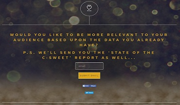

• Applications developer with a strong background in .NET. Occasionally I still get to play with Java (in the context of Android, and CodeForces challenges).
• Languages: C#, VB.Net, Java, Axapta (X++)
• ORM: Entity Framework
• Web technologies: ASP.NET MVC/WebApi, JavaScript, AngularJS, HTML5, CSS3, Bootstrap, AIF/WCF, D3.js
• Database: SQL Server, SSRS, Firebase
• Mobile development: Android
• ERP: MS Dynamics AX 2012
Recent Work

A toying web application for me to learn D3.JS.
This application to call Quandl REST API to get end of day US stock price and display different charts, e.g.Open, Low, High, Volume,...
Also, this application to call IUCN REST API to get data about threaten/endangered species.
Link: http://programmingfun.azurewebsites.net/#!/visualization/stock
Technologies used: AngularJS, D3.js

A web application for C-suites (CEO, CMO, CTO) to submit a winning code received from a gift package.
Technologies used: Firebase, AngularJS, Google Analytics
A web application for Thompson Reuters
Technologies used: Firebase, AngularJS, Google Analytics

A graphical web-based dashboard of county transportation performance measures.
Technologies used: ColdFusion, SQL Server, HTML5, CSS3, jQuery

A web application for 39 counties to submit various reports four times a year. CRAB management staff will review and approve the county reports through this system.
Technologies used: ASP.Net WebAPI, AngularJS, SQL Server

Mobility
An inventory management system for county road infrastructures: horizontal curves, vertical curves, clear zone segment, etc.
Technologies used: .Net, ADO.Net data service, SQL Server, GIS

Systemic Safety Project Selection Tool
Provides a step by step process for conducting systemic safety analysis; analytical techniques for determining a reasonable balance between the implementation of spot safety improvements and systemic safety improvements, and a mechanism for quantifying the benefits of safety improvements implemented through a systemic approach.
Technologies used: .Net, ADO.Net data service, SQL Server


{kind=link}
{kind=link}